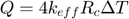
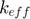
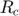
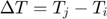

ConductionDirect_BOB class
Contents
Description
This is a sub-class of the ConductionDirect class for the implementation of the Batchelor & O'Brien direct heat conduction model.
This model assumes a steady-state thermal flux between two smooth-elastic particles pressed together by a static compressionload forming a flat circle of contact, considering the Hertz theory. Furthermore, it is considered that particles are in vacuum, thus appropriate for when the particles thermal conductivity is much higher than the conductivity of the interstitial fluid.
The rate of heat transfer is given by:

Notation:
: Effective contact conductivity
: Contact radius
: Temperature difference between elements i and j
References:
classdef ConductionDirect_BOB < ConductionDirect
Constructor method
methods
function this = ConductionDirect_BOB()
this = this@ConductionDirect(ConductionDirect.BOB);
this = this.setDefaultProps();
end
end
Public methods: implementation of super-class declarations
methods
%------------------------------------------------------------------
function this = setDefaultProps(this)
end
%------------------------------------------------------------------
function this = setFixParams(this,~)
end
%------------------------------------------------------------------
function this = setCteParams(this,~)
end
%------------------------------------------------------------------
function this = evalHeatRate(this,int)
this.total_hrate = 4 * int.eff_conduct * int.kinemat.contact_radius * (int.elem2.temperature-int.elem1.temperature);
end
end
end